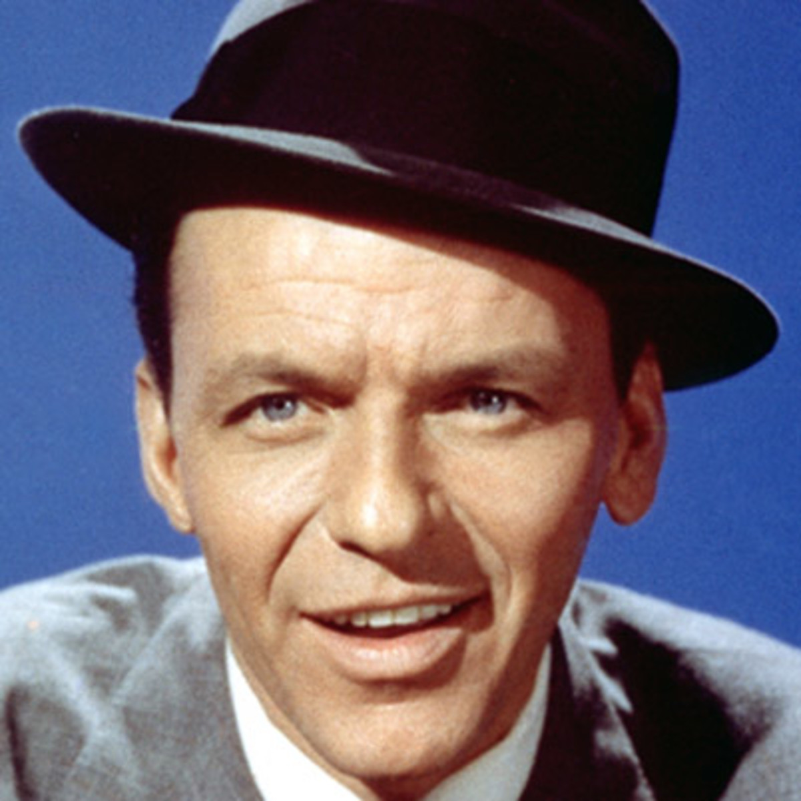

E - Extraversion préférée à l'introversion : les ESTP aiment interagir avec les autres. Ils « gagnent » de l'énergie par le contact avec autrui, à la différence des introvertis qui en perdent dans les mêmes situations et ont besoin de solitude pour récupérer, et aiment posséder un large cercle de connaissances.
S - Sensation, préférée à l'intuition : les ESTP raisonnent davantage par le concret que par l'abstrait. Ils concentrent leur attention sur les détails plutôt que sur une vision globale des choses, et sur les réalités immédiates plutôt que sur les possibilités futures.
T – Pensée (Thinking), préférée au sentiment : les ESTP placent les critères objectifs au-dessus des préférences personnelles. Lorsqu'ils prennent une décision, ils accordent une importance plus grande à la logique qu'à des considérations sociales et/ou passionnelles.
J – Jugement, préféré à la perception : les ESTJ planifient leurs activités et prennent des décisions rapidement. Leur tendance à prédire les probabilités d'une situation future suscite chez eux un certain self-control, qui peut sembler limitatif aux yeux des types préférant la perception.
| Sonia Sotomayor | Frank Sinatra |
|  |